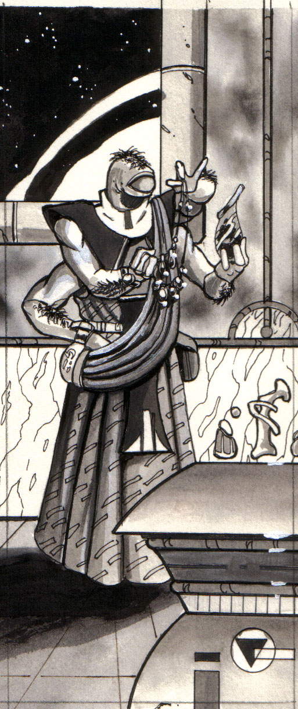
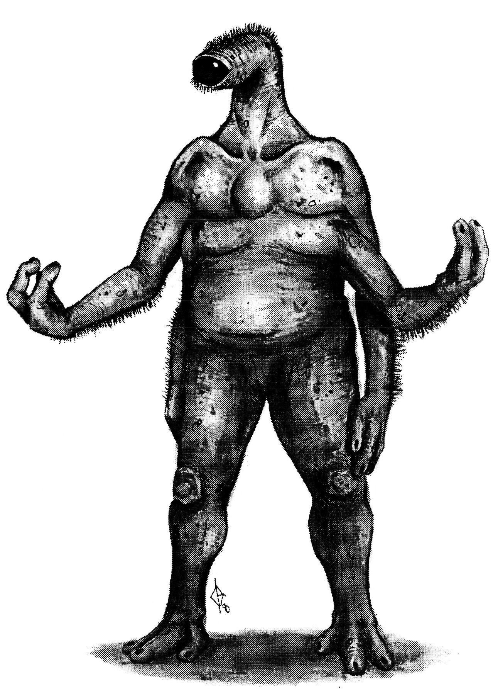
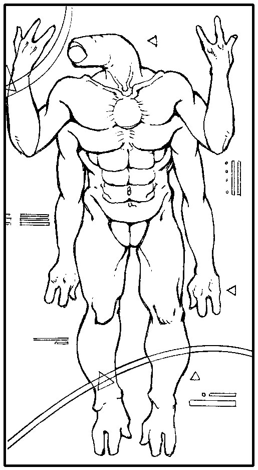
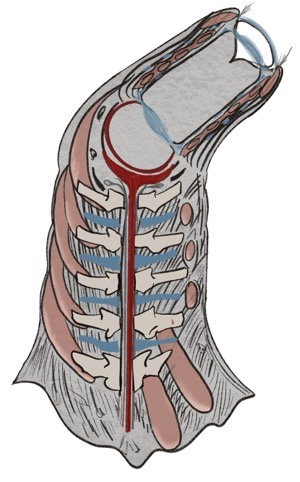
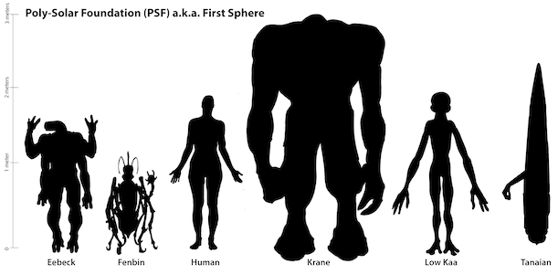

Physiology
Eebek typically have seven extremities buy may have only five. They have either two or four ressed about ninety-five percent of the time. Structurally an Eebek's arms are similar to that of humans, right down to the bone structure with the only major difference being the hands. With hands that have two thick fingers and an opposable thumb. tion of a Eebek'S endoskeleton.
An Eebek's legs are very similar to human legs, with feet that have three toes. Two toes point out forward and the third goes off the outside of the foot at a slight angle.
Their skin is very coarse and light sand in colour with light beige to champagne coloured 'spots' appearing primarily on the back and over the rest of the body with less frequency. Hair colour is usually dark brown -light beige during youth and progressively turns utterly white with age. When humans first visited Awmonee, the homeworld of the Eebek the advantage to their body and hair colouring became clear. Awmonee is almost totally a desert world where most of the planets and vegetation have the same colourings. They were excellently camouflage for their own world but sadly out of place on our blue-green planet. Their hair is mostly concentrated in a "mane" that runs down the centre of the back.
One of the most notable features of the physique is the single eye atop the long 'neck' like structure. The eye is usually 6 - 9 cm in diameter and about 25 - 30 cm long. The lens of the eye is just one of two that, when used in conjunction, act as a telescope and allow the Eebek to resolve detail up to 200 meters away. Both of the lenses can be pulled by surrounding muscle bodies and thus be made more concave to focus the image on the cornea. When the eye is used to look at something up-close muscles pull the lenses closer together. The volume of the eye stalk is reduced and pressure builds up in the fluid that fills the space between the lenses. This pressure keeps the 'walls' of the eyestalk clear of the light path and is also what forces the eye stalk back out to its normal length and volume when the ocular muscles relax. There is a large eyelid with one eyelash that sweeps down over the eye to keep it moist and dust free. The eyelashes basic structure is of 1 mm. major hairs with hundreds of smaller minor hairs that run off of it. Each of these minor hairs also has smaller sub-hairs. This intricate structure is all to filter the air and catch dust or air-borne particles. The hearing diaphragm is located on the eyestalk, just between the "eye" and "neck" parts on the bottom side of the "eye". It is simply an soft and dry film of tissue that can vibrate with sounds and give the Eebek a sense of hearing.
The "neck" is basically composed of four disk like bones which have microscopic hills and valleys where tendons are attached and facilitate its movement (as shown in fig. 3). The muscles are attached in a fashion that allows an extensive amount of twist as well as shrinkage to the neck (as shown in fig. 4 and 5). The bones in the "neck" have a central hole where the nerves and blood vessels pass. An Eebek'S brain is centralized right below the eye and between the upper set of arms. It has three lobes but is otherwise structured similarly to that of the humans. Two of the lobes have the same function as a humans while the third lobe is specifically for the coordination of the other two as well as voluntary and involuntary muscle movement.
The "mane" starts on the eye stalk just below the the eye sections and ends just above the knee with branches onto each arm. It has the same structure as the eyelash with the exception that the hairs in the mane are kept wet to capture more air-borne dust. This is to more-completely filter air for the Eebek's respiratory system. Eebek's breath through pores that lie under the mane and all along its length. The single biggest advantage to this long 'lung' lies in the fact that the blood can be aerated more often and the effects of oxygen debt. the inability of the lungs to supply enough oxygen, aren't as pronounced as compared to humans. Water's surface tension causes a pocket of air to stay around the mane when underwater. This is the EebekIAN equivalent of holding your breath. The respiratory system is extremely interesting because of the unusual structure of the elongated 'lung'. Air is drawn into this lung by a medium sized muscular bag located on either side of the brain. When the circulatory system reaches any body tissues it splits up into capillaries and travels through the local 'lung' and the blood is aerated. This 'fresh' blood is pushed passed the local tissues and travels to the next group of tissues and their 'lung'. Therefore no matter how hard an Eebek exercises he will never experience oxygen debt, (except Eebek's don't use the oxygen in the air they breath nitrogen. The limiting factor on an Eebek's endurance is now the efficiency of their excretory and digestive systems. The circulatory system is also fascinating because Eebeks don't have hearts. Their blood is pushed around the body by strong muscles in the wall of the largest blood vessels. These muscles are only present in the major vessels because diffusion could not occur a thick muscle wall. The mouth is almost a direct passage right into the stomach. When a Eebek eats - the food is put into a primary chamber where it is 'chewed' by hard ball like growths of calcium attached to the walls of this chamber. This, physically digested food, is then released into the secondary chamber or stomach for chemical digestion. Eebeks need their food cut up into very small bits, so formal parties and their small bite sized morsels are a boon for them. N A male Eebek is almost impossible to tell from a female, because both sexes have totally internalized sexual organs. The actual fact is that when a male and female have sex the female lays an extremely soft-shelled egg inside the male. Who then fertilizes the egg with his genetic code and carries it for 7 and a half months. The egg - much harder and larger - is laid after developing in the male for the gestation period. An hour after 'birth' it will hatch revealing a baby Eebek.
Senses
Most sensation occurs through nerve cells similar to those found in human anatomy. These nerves hook-up all of an Eebek'S receptor cells with the brain that processes the information to sense the external environment. The eye is the largest sensory organ of the Eebek providing about ninety percent of all the sensory information that reaches brain. The neck and eye form a complex area of muscles, nerve endings and tissues that all function as an organ and allow the Eebek to see in three hundred and sixty degrees. The last ten percent is contributed to by the rest of the senses. The smell sense has millions of chemoreceptors, that pick up small portions of air-borne odour molecules, located near the brain in the respiratory tract. Taste is very poor with Eebeks - in fact you probably wouldn't call it taste at all. The smell and taste senses are not linked like in humans and therefore do not compliment each other. As in humans the receptors of the tactile sense are located in the skin that entirely covers the Eebek'S body. Due to the coarseness of the skin the touch sense is somewhat diminished but still a valuable tool. Their hearing is very acute because of positioning of the diaphragm. The single 'ear' however cannot get the same directional sense that a human can from two. Their final sense is that of telepathy. Eebek'S brains, like most other brains, send out U.L.F. (Ultra-Low Frequency) waves but unlike other brains the Eebek'S is also sensitive to these waves. This means that EebekS can get mental pictures from people around them. Of course everyone's brain is different and thus only big feelings or 'pictures' can been sensed. So, for example EebekS do not possess the ability to read exact individual thoughts.

Speech
They communicate by gestures and through mental pictures transmitted by U.L.F. waves, thought to be telepathy at first. Scientists were amazed at how well EebekS could sense the thoughts of others but the study suggested that only very clear and uncomplicated thoughts could be received with any accuracy. The hypothesis was verified and a possible explanation forwarded. The brains of different people work slightly differently and no two responses to the same stimuli are exactly the same. So, thought the researchers, the more complex the pictures the greater the chance of a different response coming from the same U.L.F. waves. They tested this theory and found it to be true and not only for complex thoughts but even more so between different races. Thoughts were successfully received from race to race but only after much trial and error and intensive study on the part of the Eebek to understand how TERRANS think. As it turns out this study of a person's brain and their thought patterns greatly increases the chances of getting the right response. Other implications of this study was the fact that times of extreme stress or strong emotions punctuate the thoughts and makes them easy to "read". Much more experimenting and research is being done to see what makes the Eebek'S brain able to sense U.L.F. waves. This topic is still a blazing issue among the experts. D.F. Sutton claims that it is the trinary cerebrum structure and the bone / cartilaginous semi-spherical capsule that encloses it which causes this phenomenon. Others stick behind the symbiotic U.L.F. induction theory stipulated by Dr. V.J. 'Peter' Domjaltic B.Sc., Ph.D. Finally there are, and probably always will be those, who call it Telepathy and leave it at that. In any case whether or not scientists can explain it or we understand it - it happens and is still one of the unsolved questions science has yet to answer. The 'Beckian written language that looks like art rather than text due to long flowing letters with periodic shapes and smooth appearances. The whole language as only ten letters that can be used to form sentences but each can have as many as twenty five meanings - depending on the context in which it is used. The language is definitely one of the hardest to learn.
Social / Culture
The Eebek live in absolute peace and have done so for the last two-hundred and fifty years. This is mostly due to the social-democratic system of government that they have. It was elected after a bloody history of several different kinds of rulers, leaders and sovereign states through the course of fifteen hundred years of local nation state rule. Then, after these broad shifts in political alignment, the shifts became smaller and smaller until the present, where one political party has been in control of the unified world government for over one hundred and seventy-five years. Through this last stage the planet has been able to coordinate its efforts in a very few directions, thereby accomplishing huge advances in very specific fields. One of these advances was sixteen percent light drive colony ship called the 'Jendali' after the name of the first unilateral peace initiative on Awmonee. The word has more than one meaning but basically that of peace, friendship and non-aggression. After being sent off in the year 2042 it was to arrive at Sol in and contact the inhabitants of the third planet, Earth. When the ship returned in just ???years the whole planet and it's government were infuriated. Here were these space travellers who were entrusted with the all the hopes and efforts of the planet and they had thrown it all away by returning before they even reached Earth - at least that what the planet thought. You see - Terrans had discovered a process that can bend space between two vastly different places in space and effectively make them the same place. So you could journey to Alpha Centauri from earth just as easily as docking a ship and in just seconds. There was one little hitch - because of the huge gravity differences inside a solar system the process could not safely be used. Any attempt to 'Delta Warp' would have to be outside a solar system. Unfortunately the Earthlings didn't have viable star drives that could take them out of system in any reasonable time frame. They had begun development of these star drives when the EebekIAN ship and its sixteen percent light drive contacted them from the edge of their solar system. The researchers that had developed and built the Delta Warp saw the opportunities and petitioned the world government to allow an integration of technologies. After two and a half years the merger was ratified and activities commenced. The huge computer and magnetic field generators hand to be integrated into the Jendali and generators installed to meet the systems huge power requirements. The trip out of system took about one month at which time the DeltaWarp equipment was activated and the Jendali appeared just outside the home system of the Eebek - Rilla And. The crew of the ship was occupied by a contingent of "ambassadors" from the planet of Earth. Well the rest is as they say - history and the two races are still cooperating. Eebeks who participate in joining, are not bound by any legal documents as is customary in human marriages but merely a verbal commitment to their spouse. This vow is sacred to the couple and they are usually mates for life. The EebekIAN family group is very strong and closely knit. The family or 'House' is always composed of two parents and three kids because unlike humans who can choose how many kids the have Eebek by instinct / custom have three children. These children stay very close to home, even after they have their own families. This structure was a protection of family chattels about fifteen hundred years ago. However it presently functions as huge "safety net" where anyone in the family who has problems can talk with a relative and sort them out. The males are not the ones who carry the responsibilities of raising the children as one might suspect in fact both parents share the load. It is acceptable for females to have jobs / careers like the males and provide for the family equally as the male does. In fact it is quite common among Eebek females to work. This causes great stability in the House and over the whole planet. This system of Houses sounds was an etirely new social order. It came about from the barbaric period of the Eebekian history. Houses were established to protect their member's property and belongings from the raids of the Ove-klaRENh or 'OVERLANDERS'. Savage groups of Eebek that traveled around on the planet brutally taking anything they wanted from the disorganized farming communities. The individual House was powerless because the Ove-kla-RENh were nomadic in their travels and could not be pursued into territory of a neighbouring house for fear of a inter-house war. Some of these actually happened and the results were sometimes very server.
Special Abilities
Some Eebek possess the ability to focus their minds and use this focused energy to perform physical work of all sorts. The only limit to the power that can be tapped seems to be the level of concentration that he brain can be taken to. Some master are reputed to have been able to lift thousands of tons of weight and change a kilogram of lead into a kilogram of the purest gold that this universe has ever seen (approaching 99.99999997 % pure). Concentration and focus, of the mind's power and energy, are the seed of this skill and can eventually grow - with practice - into a formidable and welcome ally when you are without a weapon.
Sex
Heterosexual and asexual
Life Span
The Eebek live in absolute peace and have done so for the last 250 years due to their social-democratic system of government. It was established after a bloody history, when savage groups roamed the planet brutally disrupting the disorganized farming communities. Broad shifts in political alignment lessened until finally, one empowered 'greater house' has lead the unified world government for over 175 years. Each of these greater houses consist of a number of family groups. The Bekian 'lesser house' is always composed of two parents and three children, a number which is defined by instinct and custom.Individuals, by gathering opinions from a wide variety of sources, can attempt to understand the collective bekian reality. In the past this lead to an overall homogenization of the racial perspective, which produced a era of social stagnation.
First Sphere - Racial Size Comparison Chart

---